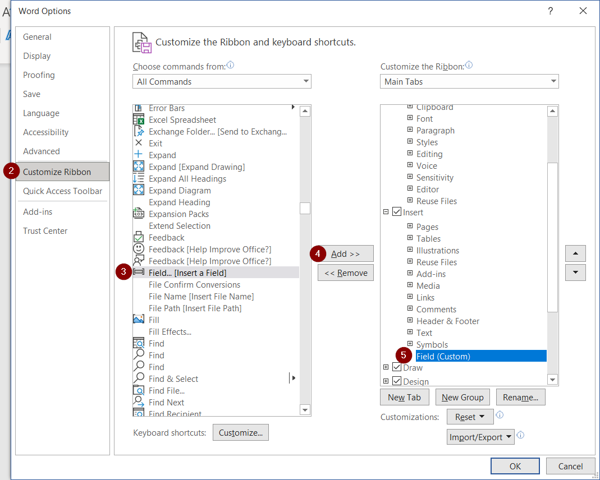
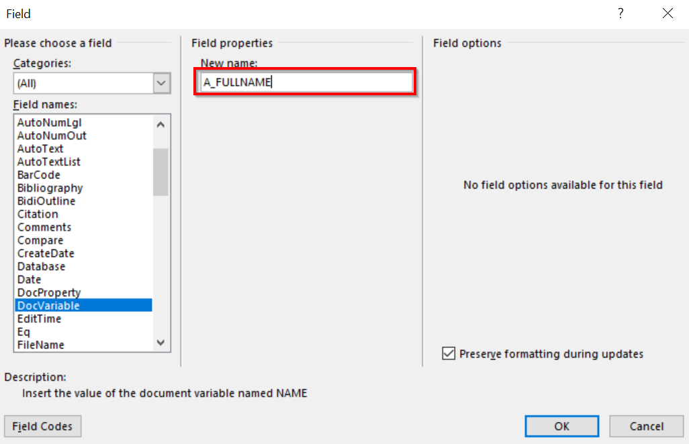

Creating Documents
Document Templates
All document templates can be classified in separate groups in the register that can be found in the system search function by entering Document Templ. Groups.
For the orders, contracts and notifications a countless document templates can be made. How to create document templates is described in the chapter Creating Documents. All created document templates are summarized in the list Document Templates.
Setup in MS Word
To be able to create a template in Microsoft Word, a new button Field must be added to the toolbar. Click on the File (1) in the upper left corner and Options.

Click on Customize Ribbon (2). Under the section Insert in the list on the right choose Insert – left click of the mouse Add New Group – Name it Field (5). Choose the function Field (3) from the list on the left and Add (4).

The already added button to the system appears as follows:

Document fields in Business Central
In order to be able to create a template, the fields that are used to enter the variable values in the user defined template are developed in the system. A list Document Fields includes the following fields:
- Code – field code;
- Reference – a list in the system from where the fields are processed;
- Description – description of the code;
- Use Text Case – check if this field can bend in all text cases;
- Text Case Gender – select the gender for bending;
- Field Value – the field value, already filled in the document.
Document fields are located at:
- Employee Card - available at Employees card by pressing Related - Personnel;
- Labour Contract - available at Labour Contract List card by pressing Process - Document Fields. In the document Field list of the Labour contract, those fields that will be necessary when creating labour contracts and alterations are summarized. It includes the fields from the employee cards and fields from the employment contract, as well as the fields from the labour contract payroll components and company information;
- Position Order - As the position order consists of two parts – header and lines -, each part has its own document fields. The header document fields can be opened by pressing Process - Document Fields, but the line fields can be opened from the Line toolbar by pressing Line - Document Fields;
- Personnel Order - The same as the position orders, the personnel orders consist of two parts – header and lines, and each part has its own document fields. The header document fields can be opened by pressing Process - Document Fields, but the line fields can be opened from the Line toolbar by pressing Line - Document Fields, containing information from the employee card fields, personnel order lines, including personnel order payroll components, as well fields from Company Information;
- Personnel Documents - fields are available at Process - Document Fields. There, the fields that will be needed by creating different personnel documents are summarized, for example, contract for company car, contracts for mobile phone limits etc., – fields from the employee cards, labour contracts and it's payroll components, as well as the fields from the position orders, personnel orders and company information.
Creating templates
Creating documents and inserting fields, what are not payroll components
To create a template:
- Open the empty MS Word document or a sample of a document to use as a template;
- At the place where you need the information to fill in out of the system, define the field, for example, insert the field for the full name of the employee:
- Place a cursor or select the text that needs to be replaced with the equired field;
- Press on the pre-attached button Field;
- It will open the following window, where you should choose from the list Field names - DocVariable (1) and, in the field New name, type FULLNAME (2) - the name of the field that will return the full name of the employee:

- most of the fields can be declined. To do this, write the first letter of the appropriate declension before the field code:
G – Genitive – of who?
D – Dative – to whom?
A – Accusative – whom?
I – Instrumental – with what?
L – Locative – in/at?
V – Vocative - hey!
In an example below, declension in accusative would look like as follows:

- The attached field will be invisible by default in the document; therefore, for the user's convenience for editing the document the function Toggle Field Codes can be used. It can be started with the right click on the mouse by pressing in that place, where inserted field is located:

The transcript of the following field appears:

- Repeat these steps until all document fields are defined.
- The created document save in the field format Word Document(*.docx).
Adding the payroll component field
The payroll components are added to the document similar to the other fields described in the previous section. The difference is in the definition of the field. All document fields of payroll components contain the symbol %1, for example, in labour contract payroll component – salary amount looks like this - LPC_%1_AMOUNT. Symbol %1 must be replaced with the relevant document field ID that is defined in the payroll component tables.
For example:
Labor contract has been created with the following payroll component, which was automatically assigned to a document field ID:

Then the definition that should be recorded in MS Word file will be as follows - LPC_101PC1_AMOUNT.
Next, the same activities that are described in the previous section by adding fields are required - other than payroll components.
Adding Templates to Business Central
When the template is created, it must be added to the system. Then it can be added to different events – when preparing the personnel orders, creating labor contracts, etc.
Open the list Document Templates. Under the section Template, click on the button Import Template. Choose a document you want to import. When the document is imported, a checkmark is added to the field Template Exists.